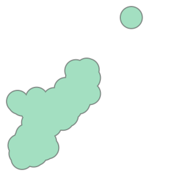

import folium
from folium import Marker, GeoJson
from folium.plugins import HeatMap
from shapely.geometry import MultiPolygon
import math
import pandas as pd
import geopandas as gpdTechniques
measure distance between points on map
select all points within same radius
releases = gpd.read_file('data_for_all_courses\\toxic_release_pennsylvania\\toxic_release_pennsylvania.shp')
releases.head()| YEAR | CITY | COUNTY | ST | LATITUDE | LONGITUDE | CHEMICAL | UNIT_OF_ME | TOTAL_RELE | geometry | |
|---|---|---|---|---|---|---|---|---|---|---|
| 0 | 2016 | PHILADELPHIA | PHILADELPHIA | PA | 40.005901 | -75.072103 | FORMIC ACID | Pounds | 0.160 | POINT (2718560.227 256380.179) |
| 1 | 2016 | PHILADELPHIA | PHILADELPHIA | PA | 39.920120 | -75.146410 | ETHYLENE GLYCOL | Pounds | 13353.480 | POINT (2698674.606 224522.905) |
| 2 | 2016 | PHILADELPHIA | PHILADELPHIA | PA | 40.023880 | -75.220450 | CERTAIN GLYCOL ETHERS | Pounds | 104.135 | POINT (2676833.394 261701.856) |
| 3 | 2016 | PHILADELPHIA | PHILADELPHIA | PA | 39.913540 | -75.198890 | LEAD COMPOUNDS | Pounds | 1730.280 | POINT (2684030.004 221697.388) |
| 4 | 2016 | PHILADELPHIA | PHILADELPHIA | PA | 39.913540 | -75.198890 | BENZENE | Pounds | 39863.290 | POINT (2684030.004 221697.388) |
releases.info()<class 'geopandas.geodataframe.GeoDataFrame'>
RangeIndex: 4663 entries, 0 to 4662
Data columns (total 10 columns):
# Column Non-Null Count Dtype
--- ------ -------------- -----
0 YEAR 4663 non-null object
1 CITY 4663 non-null object
2 COUNTY 4663 non-null object
3 ST 4663 non-null object
4 LATITUDE 4663 non-null float64
5 LONGITUDE 4663 non-null float64
6 CHEMICAL 4663 non-null object
7 UNIT_OF_ME 4663 non-null object
8 TOTAL_RELE 4663 non-null float64
9 geometry 4663 non-null geometry
dtypes: float64(3), geometry(1), object(6)
memory usage: 364.4+ KB# air quality data
stations = gpd.read_file('data_for_all_courses\\toxic_release_pennsylvania.shx')
stations.head()| geometry | |
|---|---|
| 0 | POINT (2718560.227 256380.179) |
| 1 | POINT (2698674.606 224522.905) |
| 2 | POINT (2676833.394 261701.856) |
| 3 | POINT (2684030.004 221697.388) |
| 4 | POINT (2684030.004 221697.388) |
stations.info()<class 'geopandas.geodataframe.GeoDataFrame'>
RangeIndex: 4663 entries, 0 to 4662
Data columns (total 1 columns):
# Column Non-Null Count Dtype
--- ------ -------------- -----
0 geometry 4663 non-null geometry
dtypes: geometry(1)
memory usage: 36.6 KBstations2 = gpd.read_file('data_for_all_courses\\toxic_release_pennsylvania.shp')
stations2.head()| geometry | |
|---|---|
| 0 | POINT (2718560.227 256380.179) |
| 1 | POINT (2698674.606 224522.905) |
| 2 | POINT (2676833.394 261701.856) |
| 3 | POINT (2684030.004 221697.388) |
| 4 | POINT (2684030.004 221697.388) |
stations3 = gpd.read_file('data_for_all_courses\\toxic_release_pennsylvania.dbf')
stations3.head()| YEAR | CITY | COUNTY | ST | LATITUDE | LONGITUDE | CHEMICAL | UNIT_OF_ME | TOTAL_RELE | geometry | |
|---|---|---|---|---|---|---|---|---|---|---|
| 0 | 2016 | PHILADELPHIA | PHILADELPHIA | PA | 40.005901 | -75.072103 | FORMIC ACID | Pounds | 0.160 | POINT (2718560.227 256380.179) |
| 1 | 2016 | PHILADELPHIA | PHILADELPHIA | PA | 39.920120 | -75.146410 | ETHYLENE GLYCOL | Pounds | 13353.480 | POINT (2698674.606 224522.905) |
| 2 | 2016 | PHILADELPHIA | PHILADELPHIA | PA | 40.023880 | -75.220450 | CERTAIN GLYCOL ETHERS | Pounds | 104.135 | POINT (2676833.394 261701.856) |
| 3 | 2016 | PHILADELPHIA | PHILADELPHIA | PA | 39.913540 | -75.198890 | LEAD COMPOUNDS | Pounds | 1730.280 | POINT (2684030.004 221697.388) |
| 4 | 2016 | PHILADELPHIA | PHILADELPHIA | PA | 39.913540 | -75.198890 | BENZENE | Pounds | 39863.290 | POINT (2684030.004 221697.388) |
stations3.info()<class 'geopandas.geodataframe.GeoDataFrame'>
RangeIndex: 4663 entries, 0 to 4662
Data columns (total 10 columns):
# Column Non-Null Count Dtype
--- ------ -------------- -----
0 YEAR 4663 non-null object
1 CITY 4663 non-null object
2 COUNTY 4663 non-null object
3 ST 4663 non-null object
4 LATITUDE 4663 non-null float64
5 LONGITUDE 4663 non-null float64
6 CHEMICAL 4663 non-null object
7 UNIT_OF_ME 4663 non-null object
8 TOTAL_RELE 4663 non-null float64
9 geometry 4663 non-null geometry
dtypes: float64(3), geometry(1), object(6)
memory usage: 364.4+ KB# checking crs coordinates for both
print(stations3.crs)
print(releases.crs)None
EPSG:2272# stations3 = stations3.set_crs
stations3 = stations3.set_crs(epsg=2272, inplace=True)# checking crs coordinates for both
print(stations3.crs)
print(releases.crs)EPSG:2272
EPSG:2272# select one release incident in particular
recent_release = releases.iloc[360]
# measure distances from each station
distances = stations3.geometry.distance(recent_release.geometry)
distances0 48941.110275
1 14914.687505
2 40646.631420
3 0.000000
4 0.000000
...
4658 41735.245165
4659 40909.967527
4660 4519.771240
4661 32442.454868
4662 20534.504851
Length: 4663, dtype: float64# mean distance
print(f'Mean distance to monitoring stations: {distances.mean()} feet')Mean distance to monitoring stations: 35350.82207483399 feet# print minimum
print(stations3.iloc[distances.idxmin()][['COUNTY', 'LATITUDE', 'LONGITUDE']])COUNTY PHILADELPHIA
LATITUDE 39.91354
LONGITUDE -75.19889
Name: 3, dtype: objectCreating a buffer
to understand some points on the map that are some distance away from the reference point
use folium.GeoJson() to plot each polygon
two_mile_buffer = stations3.geometry.buffer(2*5280)
two_mile_buffer.head()0 POLYGON ((2729120.227 256380.179, 2729069.378 ...
1 POLYGON ((2709234.606 224522.905, 2709183.756 ...
2 POLYGON ((2687393.394 261701.856, 2687342.544 ...
3 POLYGON ((2694590.004 221697.388, 2694539.155 ...
4 POLYGON ((2694590.004 221697.388, 2694539.155 ...
dtype: geometry# create base map
m = folium.Map(location=[39.9526,-75.1652], zoom_start=11)
HeatMap(data = releases[["LATITUDE", 'LONGITUDE']], radius= 12).add_to(m)
for idx, row in stations3.iterrows():
Marker([row['LATITUDE'], row['LONGITUDE']]).add_to(m)
# plot
GeoJson(two_mile_buffer.set_crs(epsg=2272)).add_to(m)
# show
#m<folium.features.GeoJson at 0x1ccf09ef2d0># turn a group of polygons into a single polygon
my_union = two_mile_buffer.geometry.unary_union
print('Type: ', type(my_union))
# show
my_unionType: <class 'shapely.geometry.multipolygon.MultiPolygon'>